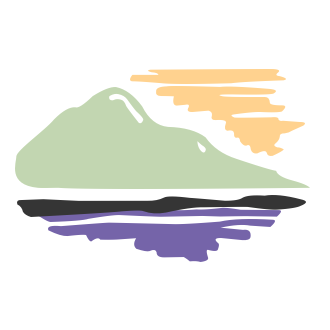
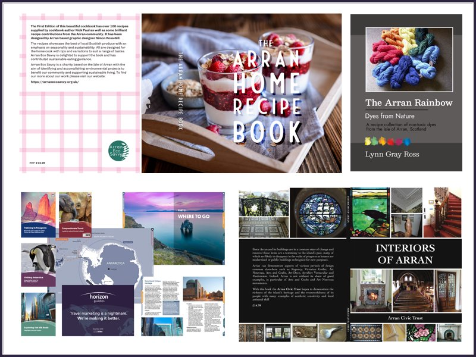
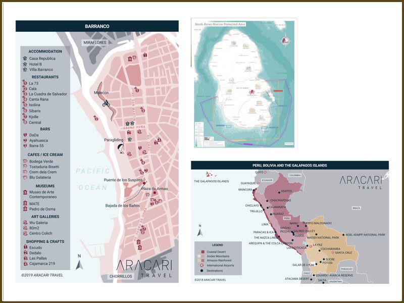
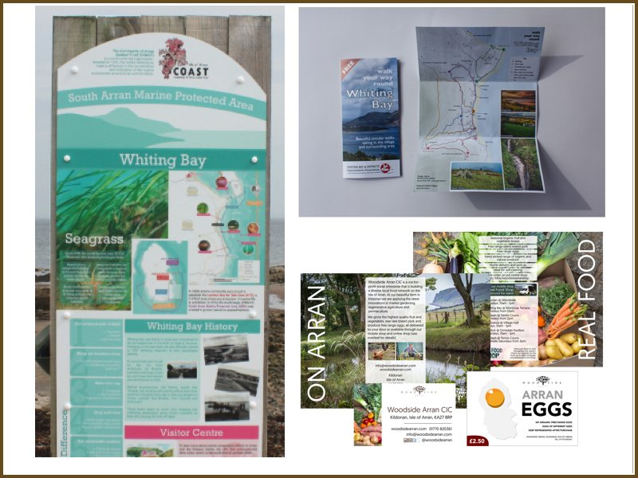
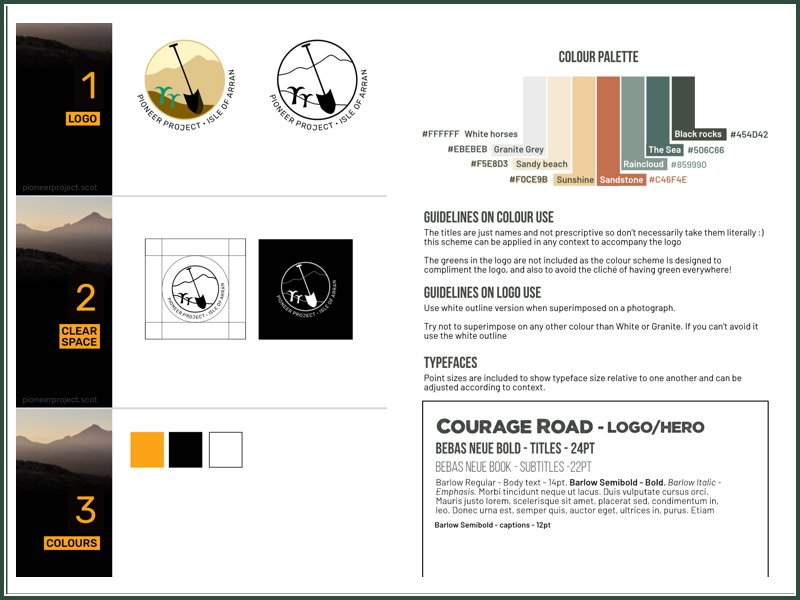
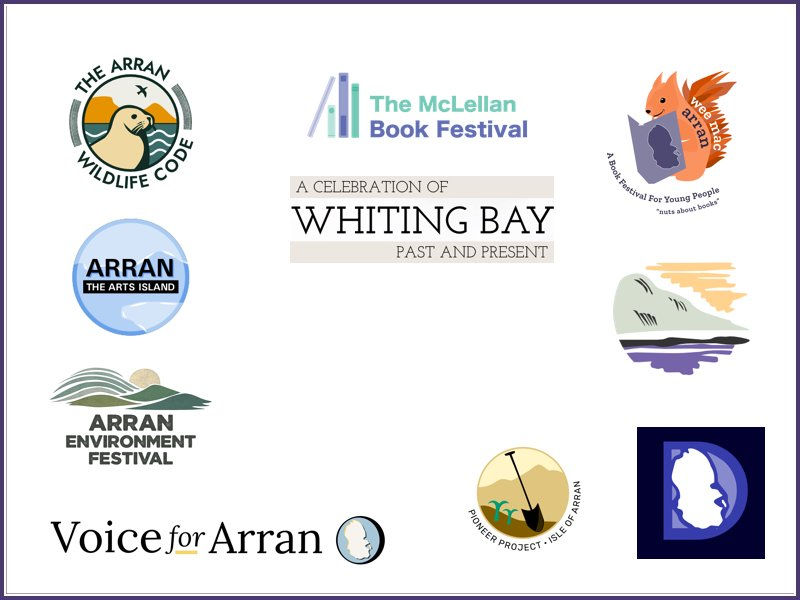
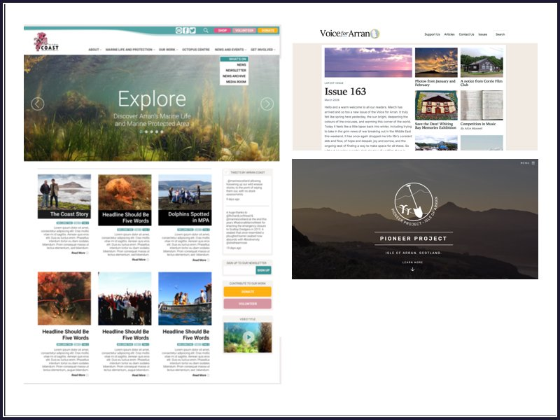
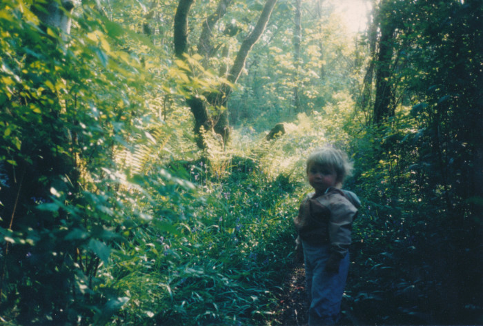

Publication design, maps & identity
Isle of Arran, Scotland
Books, handbooks, flyers and interpretive materials focussed on landscape, environment and community — Isle of Arran, working remotely.







I'm Simon Ross-Gill, a publication designer based on the Isle of Arran, where I grew up. My work is publication design for any organisation or business whose work is rooted in place - books, handbooks, ebooks and interpretive maps for conservation bodies, heritage organisations and community publishers.
Building on the artistic legacy of Arran, I am among the third generation of craftspeople in my family living in Arran. My grandfather carved furniture; my Mum wove tapestries and weavings, my Dad printed, and now I make books digitally.
Alongside design I co-direct the Arran Pioneer Project — a community interest company that has helped establish community gardens and plant fruit trees and food crops at various sites across the island since 2020, working with hundreds of local volunteers. I'm also secretary of Dùthchas Arainn CBS, a community benefit society with 90 members working toward community ownership and woodland crofting in Glencloy.
I think of design as interpretation and communication through image. The landscape and people of Arran and the west of Scotland remain a constant influence on my work.